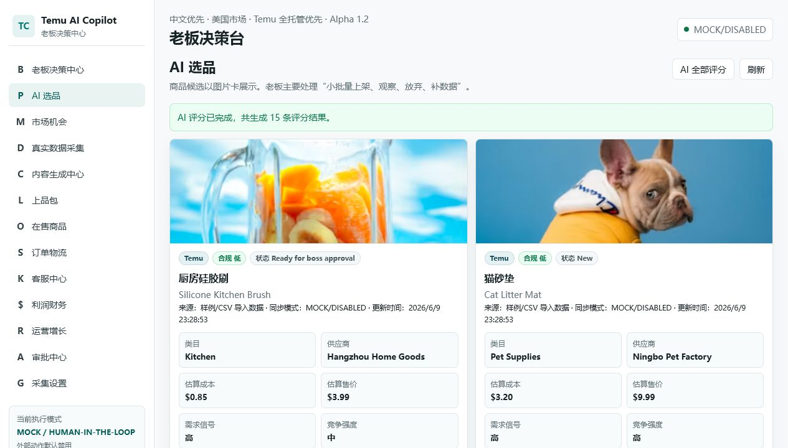
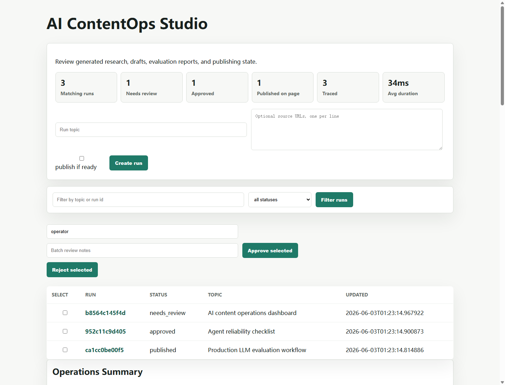
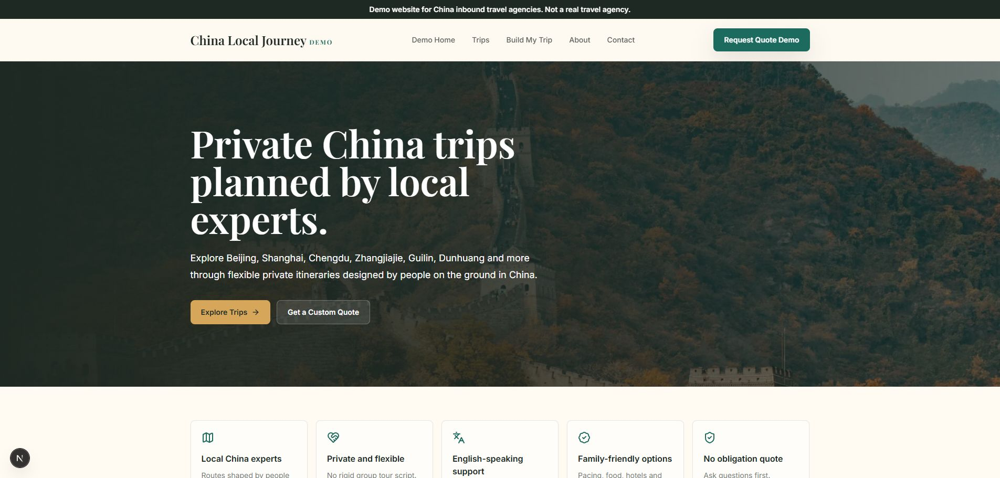

把业务数据接入 AI 工作流 Connect business data to AI workflows
CSV、文档、数据库、对象存储、运营记录，都要转成可检索、可追踪、可验证的上下文。 CSV, documents, databases, object storage, and operating records become searchable, traceable, and verifiable context.
我有 10+ 年 Java、TypeScript、AWS、数据平台和企业系统经验。近期项目聚焦把 LLM、业务数据、审批、评测、部署和产品 UI 串成真正可运行的 AI 应用。 I bring 10+ years across Java, TypeScript, AWS, data workflows, and enterprise systems. My recent work connects LLMs, business data, approvals, evaluation, deployment, and product UX into usable AI applications.
我解决的问题 Problems I Solve
CSV、文档、数据库、对象存储、运营记录，都要转成可检索、可追踪、可验证的上下文。 CSV, documents, databases, object storage, and operating records become searchable, traceable, and verifiable context.
不是默认让 AI 自动执行，而是设计审批、审计日志、质量门禁和人机协同路径。 AI should not mutate production by default. It needs approvals, audit logs, quality gates, and human-in-the-loop flow.
从 API、前端、桌面端、表单、报告到部署路径，让非技术用户知道怎么使用、怎么信任。 APIs, frontend UX, desktop packaging, forms, reports, and deployment paths make tools usable by non-technical operators.
用测试、Docker、CI、评测集、运行记录、错误恢复和安全默认值，把 demo 推到工程化阶段。 Tests, Docker, CI, evaluation sets, run records, recovery paths, and safe defaults move demos toward production shape.
重点案例 Flagship Case Studies

面向跨境电商老板和运营团队：导入 CSV/XLSX 数据，AI 做选品评分、供应商询价优先级、内容包草稿、审批任务和试点报告。真实平台变更默认禁用，重点展示本地私有部署、审计、备份和数据安全边界。 A Chinese-first decision center for e-commerce operators: CSV/XLSX import, evidence-backed product scoring, supplier quote priorities, content package drafts, approval tasks, and pilot reports. External platform mutation is disabled by default, with local/private deployment and auditability as core design constraints.
读取 JaCoCo 覆盖率报告，定位低覆盖 Maven 类，生成 JUnit/Mockito 测试，运行 Maven 校验，失败后进入修复循环，并输出可审计运行产物。 Reads JaCoCo reports, targets low-coverage Maven classes, generates JUnit/Mockito tests, runs Maven validation, repairs failures, and writes auditable run artifacts.

把研究、生成、质量评分、人工审核、发布证据、worker 和部署配置串成内容生产控制台，强调可追踪和可治理。 A source-backed content operations platform connecting research, generation, quality scoring, human review, release evidence, workers, and deployment configuration.

为中国入境游地接社设计的产品化网站系统：中文服务页、英文展示站、线路详情、拖拽行程规划、询价表单、校验 API 和邮件线索交付。 A productized website system for inbound travel agencies: Chinese service pages, English demo site, trip detail pages, drag-and-drop itinerary planner, quote forms, validated APIs, and email lead delivery.
能力模块 Capability Modules
Golden dataset、groundedness、citation correctness、运行历史、成本/延迟追踪和 CI 质量门禁。 Golden datasets, groundedness, citation correctness, run history, cost/latency tracking, and CI quality gates.
GitHubSchema 检索、SQL 安全校验、成本控制、本地 mock 执行和可追踪结果，证明 AWS 数据智能能力。 Schema retrieval, SQL safety checks, cost controls, local mock execution, and traceable results for AWS analytics workflows.
GitHub文档摄取、chunking、metadata filters、local retrieval、可选生成、confidence signal 和 run traces。 Document ingestion, chunking, metadata filters, local retrieval, optional generation, confidence signals, and run traces.
GitHub职业定位 Professional Profile
Java / Spring Boot, TypeScript, Angular, React, Python, FastAPI, SQL, Redis, Kafka, Docker, CI/CD.
AWS S3, Lambda, ECS/Fargate, CloudWatch, DynamoDB, SQS/SNS, API Gateway, RDS, Athena-style workflows.
RAG, agent workflows, test generation, LLM evaluation, content automation, SQL generation, human review, audit trails.
能把“技术能力”翻译成客户看得懂、业务用得上、团队能维护的系统。 I translate technical capability into systems customers understand, operators use, and teams can maintain.
欢迎用中文或英文交流。重点方向：企业 AI 落地、RAG / Agent / LLMOps、AWS 数据智能、开发者效率、业务系统 AI 化。 Happy to talk in English or Chinese about enterprise AI delivery, RAG / agents / LLMOps, AWS data intelligence, developer productivity, and AI-enabled business systems.